13. Agentní modely#
Co se dozvíte v tomto textu
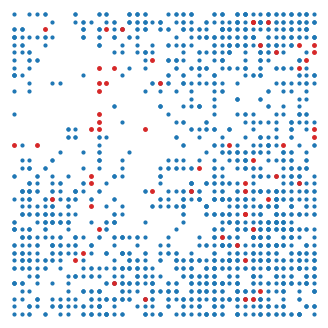
Dosud jsme populaci popisovali jedním číslem (případně několika čísly), které vyjadřovalo velikost nebo hustotu populace, a vývoj tohoto čísla jsme popsali diferenciální nebo diferenční rovnicí. V této kapitole půjdeme opačnou cestou. Budeme sledovat jednotlivé jedince, takzvané agenty, a jejich chování popíšeme jednoduchými pravidly, ve kterých hraje důležitou roli náhoda. Chování celé populace potom nebude dáno rovnicí, ale vynoří se ze vzájemného působení mnoha jedinců.
Uvidíme, že pro velké populace se agentní modely chovají podobně jako modely založené na diferenciálních rovnicích. Agentní modely však navíc umožní sledovat jevy, které deterministické rovnice nepostihnou: náhodné vymření malé populace, kolísání velikosti populace kolem nosné kapacity nebo vznik prostorových struktur.
Obrázek: Snímek simulace prostorového modelu dravce a kořisti z této kapitoly. Modré body jsou jedinci kořisti, červené body jsou dravci.
13.1. Princip agentního modelu#
Agentní modely (anglicky agent-based models, v ekologii častěji individual-based models) jsou počítačové simulace, ve kterých sledujeme každého jedince zvlášť. Každý jedinec má svůj stav (například polohu, věk, zásobu energie nebo pohlaví) a v každém časovém kroku se podle předem daných pravidel rozhoduje, co udělá. Může se přemístit, rozmnožit, ulovit kořist nebo uhynout. Pravidla bývají formulována pomocí pravděpodobností, a proto dvě simulace se stejnými parametry nedají stejný výsledek.
Definice 13.1 (Agentní model)
Agentní model je tvořen
agenty, tj. jedinci s vlastním stavem (poloha, věk, energie, …),
prostředím, ve kterém se agenti nacházejí (mřížka, souvislá oblast, zdroje potravy, …),
pravidly, podle kterých agenti mění svůj stav, rodí se, umírají a ovlivňují sebe navzájem i prostředí,
časovým krokem, ve kterém jsou pravidla aplikována.
Výstupem modelu jsou souhrnné veličiny, například velikost populace v čase, které získáme sečtením nebo zprůměrováním stavu všech agentů.
Výpočet probíhá v cyklu, který se opakuje pro každý časový krok.
Pro každého agenta vyhodnoť pravidla (pohyb, rozmnožování, interakce, smrt).
Odstraň uhynulé agenty a přidej nově narozené.
Zaznamenej souhrnné veličiny (velikost populace, rozmístění, …).
Vlastnosti celé populace nejsou v modelu zadány přímo. Vynoří se ze vzájemného působení jedinců. Tento jev se nazývá emergence.
Poznámka 13.1 (Srovnání s modely založenými na rovnicích)
Diferenciální a diferenční rovnice popisují populaci jako celek. Pracují s velikostí nebo hustotou populace a předpokládají, že všichni jedinci jsou stejní a populace je dobře promíchaná. Agentní modely umožňují snadno zahrnout rozdíly mezi jedinci, prostorovou strukturu a lokální interakce.
Deterministický model dává jedno řešení. Agentní model dává při každém spuštění jiný výsledek a proto jej spouštíme mnohokrát a výsledky zpracováváme statisticky (průměr, rozptyl, pravděpodobnost vymření).
Náhodné kolísání způsobené tím, že se jedinci rodí a umírají jednotlivě a náhodně, se nazývá demografická stochasticita. Ve velkých populacích se ztrácí, v malých populacích je rozhodující.
Nevýhodou agentních modelů je, že je obtížné je matematicky analyzovat. Nelze například jednoduše najít stacionární body a určit jejich stabilitu. Navíc jsou výpočetně náročné.
V praxi oba přístupy kombinujeme. Agentní model umožní formulovat realistická pravidla na úrovni jedinců a model založený na rovnicích pomůže výsledkům porozumět. Podrobný úvod do agentních modelů v ekologii je v knihách [10] a [17].
13.2. Dva způsoby programování: NumPy a knihovna Mesa#
Každý model v této kapitole naprogramujeme dvakrát.
Nízkoúrovňově v knihovně NumPy. Stav všech agentů uchováváme v polích (například pole souřadnic všech jedinců) a pravidla aplikujeme na celá pole najednou. Kód je krátký a rychlý, ale méně názorný. Pravidla pro jedince nejsou na první pohled vidět a přidání dalšího druhu nebo vlastnosti vyžaduje zásah do mnoha míst programu.
V knihovně Mesa, která je určena právě pro agentní modely. Agenta popíšeme jako objekt, který má své vlastnosti a metody (pravidla chování). Kód přímo odpovídá slovnímu popisu modelu a snadno se rozšiřuje. Cenou je pomalejší výpočet, protože Python zpracovává každého agenta zvlášť.
Model v knihovně Mesa se skládá z následujících částí.
Agent je třída odvozená od
mesa.Agent. Ve funkci__init__nastavíme vlastnosti agenta (například energii) a v dalších metodách, nejčastěji v metoděstep, popíšeme jeho chování. Nový agent vznikne příkazemTrida(model), agent uhyne příkazemself.remove(). Agent má přístup k modelu (self.model) a ke generátoru náhodných čísel (self.random).Model je třída odvozená od
mesa.Model. Ve funkci__init__vytvoří prostředí a počáteční agenty, metodasteppopisuje jeden časový krok. Všichni agenti jsou dostupní jakoself.agents, agenti jednoho druhu jakoself.agents_by_type[Trida]. Příkazself.agents.shuffle_do("step")zavolá metodustepvšech agentů v náhodném pořadí.Prostředí, například čtvercová mřížka
OrthogonalMooreGrid, na které se pohybují agenti odvození od třídyCellAgent. Každý takový agent zná své políčkoself.cell, a tím i ostatní agenty na stejném políčku a sousední políčka.Sběr dat
mesa.DataCollectorv každém kroku zaznamená zvolené veličiny (například velikosti populací) a na konci je vrátí jako tabulku knihovny pandas.
13.3. Náhodné rození a umírání#
Začneme nejjednodušším modelem. Populace je tvořena jedinci, kteří se navzájem neovlivňují. V každém krátkém časovém intervalu délky \(\Delta t\) se každý jedinec nezávisle na ostatních
rozmnoží (přidá do populace jednoho potomka) s pravděpodobností \(b\,\Delta t\),
uhyne s pravděpodobností \(d\,\Delta t\).
Parametry \(b\) a \(d\) jsou porodnost a úmrtnost na jednoho jedince za jednotku času. Je-li v populaci \(N\) jedinců, je za čas \(\Delta t\) očekávaný počet narozených \(bN\Delta t\) a očekávaný počet uhynulých \(dN\Delta t\). Střední hodnota velikosti populace se tedy mění rychlostí \((b-d)N\) a pro velké populace očekáváme chování popsané rovnicí exponenciálního růstu
Pravidla v Pythonu realizujeme tak, že každému jedinci vygenerujeme náhodné číslo z intervalu \((0,1)\). Pokud je toto číslo menší než daná pravděpodobnost, příslušná událost nastane. Protože jsou si v tomto modelu všichni jedinci rovni, stačí uchovávat jejich počet. Rozhodování ale probíhá pro každého jedince zvlášť.
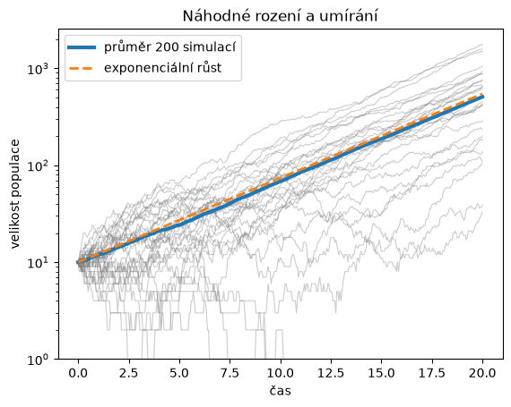
Šedé křivky jsou jednotlivé simulace. Průměr mnoha simulací kopíruje řešení diferenciální rovnice exponenciálního růstu. Jednotlivé simulace se ale od sebe liší a některé populace vymřely, přestože porodnost je větší než úmrtnost. To deterministický model nedokáže popsat. (V grafu s logaritmickou osou jsou vymřelé populace mimo zobrazovanou oblast.)
Vymřelo 22 populací z 200.
Poznámka 13.2 (Pravděpodobnost vymření)
Pro model náhodného rození a umírání se spojitým časem je možné odvodit, že pokud \(b>d\), populace s počáteční velikostí \(N_0\) vymře s pravděpodobností
Ověříme tento vztah simulací. Pro různé počáteční velikosti populace spustíme model mnohokrát a spočítáme, jaký podíl populací vymřel. Simulaci ukončíme, jakmile populace vymře nebo naopak dosáhne velikosti 200 jedinců. Taková populace už prakticky nemá šanci vymřít.
| simulace | teorie (d/b)^N0 | |
|---|---|---|
| N0 | ||
| 1 | 0.812 | 0.800 |
| 2 | 0.610 | 0.640 |
| 3 | 0.500 | 0.512 |
| 5 | 0.335 | 0.328 |
| 8 | 0.175 | 0.168 |
13.3.1. Stejný model v knihovně Mesa#
V knihovně Mesa popíšeme nejprve jedince. V každém kroku se s pravděpodobností
\(b\,\Delta t\) rozmnoží a s pravděpodobností \(d\,\Delta t\) uhyne. Parametry
modelu a aktuální úmrtnost si jedinec přečte z modelu. Úmrtnost nastavuje
model na začátku každého kroku v metodě nastav_umrtnost. Zatím je konstantní,
ale v dalším příkladu ji snadno změníme. Potomci narození v daném kroku se
v tomto kroku ještě nerozhodují, metoda shuffle_do prochází jen agenty
existující na začátku kroku.
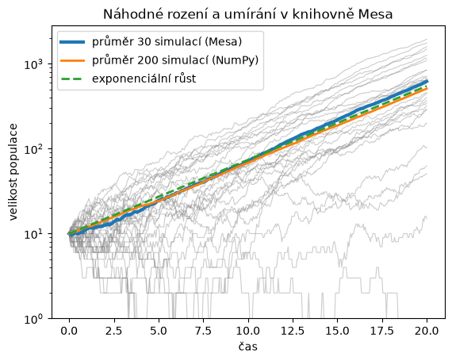
Také pravděpodobnost vymření dostaneme stejnou jako v předchozí variantě.
| simulace Mesa | teorie (d/b)^N0 | |
|---|---|---|
| N0 | ||
| 1 | 0.775 | 0.800 |
| 3 | 0.520 | 0.512 |
| 5 | 0.340 | 0.328 |
13.4. Logistický růst z pravidel pro jedince#
Aby populace nerostla neomezeně, musí se v modelu projevit vnitrodruhová konkurence. Předpokládejme, že porodnost je stále rovna \(b\), ale úmrtnost roste s velikostí populace, například proto, že se jedinci více dělí o potravu. Zvolme úmrtnost jedince v populaci velikosti \(N\) ve tvaru
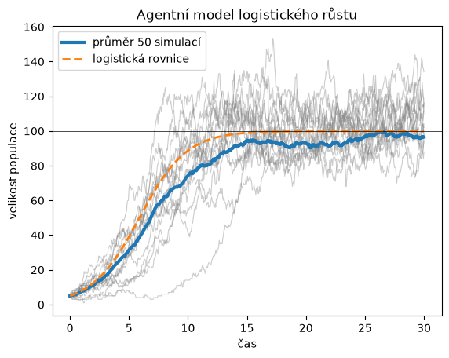
Průměr simulací leží o něco níže než řešení logistické rovnice. Některé populace na začátku náhodou vymřou a navíc úmrtnost závisí na druhé mocnině velikosti populace, takže kolísání velikosti populace v průměru zvyšuje úmrtnost. Jednotlivé populace v agentním modelu navíc nedosáhnou nosné kapacity a nezůstanou v ní, jako je tomu u řešení logistické rovnice. Velikost populace kolem nosné kapacity neustále náhodně kolísá. Rozdělení velikostí populace v pozdějších časech ukazuje následující histogram.
Průměr 94.6, směrodatná odchylka 24.2
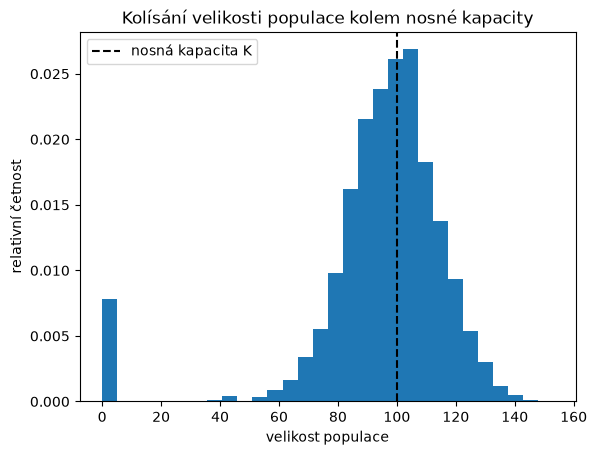
Pro populace s malou nosnou kapacitou prostředí je kolísání velikosti populace relativně velké. Dříve či později nastane situace, kdy náhodně uhyne více jedinců, než se narodí, a populace vymře, přestože deterministický model předpovídá stabilní rovnováhu v bodě \(N=K\). Tento jev je jedním z argumentů pro koncept minimální životaschopné populace, který se používá v ochraně přírody.
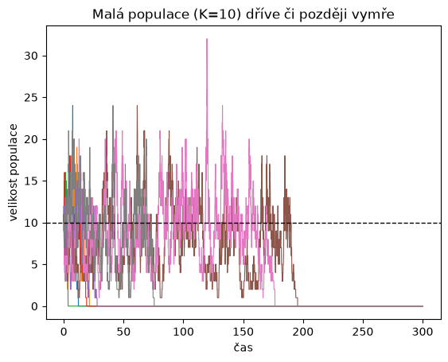
13.4.1. Stejný model v knihovně Mesa#
Zde se ukáže výhoda objektového přístupu. Jedince ani model není nutné psát
znovu. Vytvoříme potomka třídy RozeniUmirani, který změní pouze způsob
výpočtu úmrtnosti. Ta se nyní počítá z aktuálního počtu agentů
len(self.agents). Vše ostatní (rozmnožování, umírání, sběr dat) zůstává stejné.
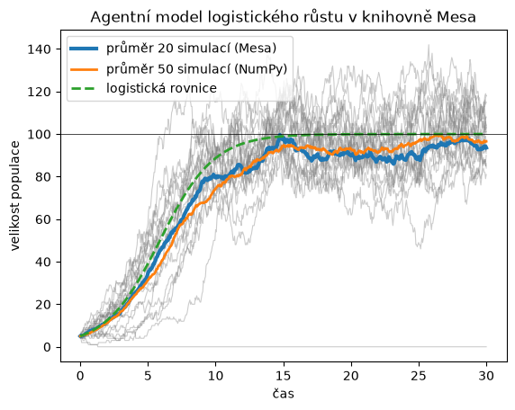
13.5. Prostorový model dravce a kořisti#
Jednou ze silných stránek agentních modelů je možnost zahrnout do modelu prostor. V Lotkově–Volterrově modelu předpokládáme, že se každý dravec může setkat s každým jedincem kořisti a že počet setkání je úměrný součinu velikostí obou populací. Ve skutečnosti se ale dravec setká jenom s kořistí ve svém okolí.
Uvažujme čtvercové území rozdělené na \(L\times L\) políček. Abychom se vyhnuli problémům na okraji, budeme předpokládat, že agent, který opustí území na jedné straně, se objeví na protější straně (takzvané periodické okrajové podmínky). Na území žijí jedinci kořisti a dravci. V každém časovém kroku platí následující pravidla.
Pohyb: Každý agent se přesune na náhodně zvolené sousední políčko (nebo zůstane na místě).
Rozmnožování kořisti: Každý jedinec kořisti se s pravděpodobností \(p\) rozmnoží, pokud je na jeho políčku méně než daný počet jedinců kořisti (lokální nosná kapacita, potravní zdroje políčka jsou omezené). Potomek zůstává na stejném políčku.
Energie dravce: Každý dravec spotřebuje v každém kroku jednu jednotku energie.
Lov: Pokud je na políčku s dravcem nějaká kořist, dravec jednoho jedince uloví a získá tím zadaný počet jednotek energie.
Rozmnožování dravce: Dravec, jehož energie dosáhne zadané hranice, se rozmnoží a rozdělí svou energii rovným dílem mezi sebe a potomka.
Smrt dravce: Dravec, kterému dojde energie, uhyne.
Stav každého agenta je dán jeho souřadnicemi a u dravce navíc zásobou energie.
Souřadnice všech jedinců kořisti uchováváme v polích kx, ky, souřadnice
dravců v polích dx, dy a energii dravců v poli energie.
Doba výpočtu (NumPy): 1.0 s
| kořist | dravec | |
|---|---|---|
| 0 | 454 | 58 |
| 100 | 3064 | 716 |
| 200 | 4306 | 174 |
| 300 | 1691 | 58 |
| 400 | 533 | 347 |
| 500 | 3590 | 526 |
| 600 | 3369 | 124 |
| 700 | 1285 | 191 |
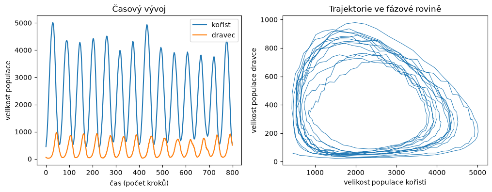
Podobně jako v Lotkově–Volterrově modelu populace oscilují a maximum populace dravce následuje se zpožděním za maximem populace kořisti. Na rozdíl od deterministického modelu však amplituda i perioda oscilací náhodně kolísají a trajektorie ve fázové rovině není uzavřená křivka.
Rozmístění agentů v území během jednoho cyklu ukazují následující snímky. Rozmístění agentů není rovnoměrné. Dravci se soustředí tam, kde je dostatek kořisti, a vylovená místa zůstávají prázdná. V místech, kde dravci kořist vylovili, dravci hynou hlady a tato místa později znovu osídlí kořist z okolí. Prostorová struktura tak přispívá k dlouhodobému soužití obou druhů.
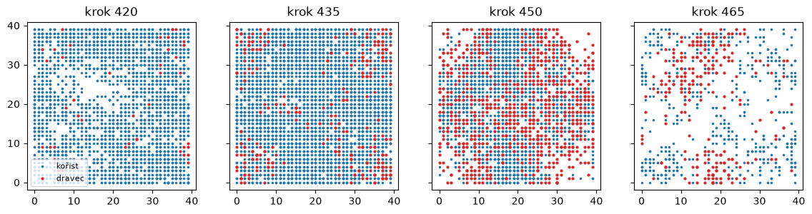
Poznámka 13.3 (Význam prostoru pro soužití dravce a kořisti)
Pokud bychom agenty v každém kroku náhodně rozmístili po celém území (dobře
promíchaná populace), dravec by se nejprve přemnožil, vylovil kořist a během
několika desítek kroků vymřel. Podobně dopadne simulace se stejnými pravidly na
příliš malém území (například \(L=15\)). Prostorová heterogenita, kdy se lokální
populace v různých částech území nacházejí v různých fázích cyklu, stabilizuje
celé společenstvo. Vyzkoušejte si to změnou parametru L nebo úpravou pravidla
pro pohyb. Na podobném principu
funguje přežívání metapopulací.
13.5.1. Stejný model v knihovně Mesa#
V knihovně Mesa odpovídá každé pravidlo jedné metodě agenta. Kořist i dravec
jsou odvozeni od třídy CellAgent, takže znají své políčko self.cell.
Příkaz self.cell.get_neighborhood(include_center=True).select_random_cell()
vybere náhodné políčko z okolí (včetně současného). Seznam agentů na políčku
je self.cell.agents. Mřížka OrthogonalMooreGrid s parametrem torus=True
má periodické okrajové podmínky. Metoda step modelu určuje pořadí
pravidel v jednom časovém kroku a je stejné jako ve verzi v NumPy.
Jediný drobný rozdíl je v rozmnožování kořisti. V NumPy se všichni jedinci rozhodují podle počtu kořisti na políčku na začátku kroku. V Mesa jedinci přicházejí na řadu postupně a vidí i potomky, kteří se na políčku narodili před nimi. Na chování modelu to nemá podstatný vliv.
Doba výpočtu (Mesa): 9.6 s
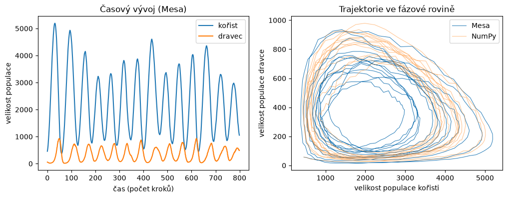
Obě implementace dávají kvalitativně stejný výsledek. Konkrétní průběh se liší, protože každá verze používá jinou posloupnost náhodných čísel. Rozmístění agentů na konci simulace získáme přímo z políček, na kterých agenti stojí.
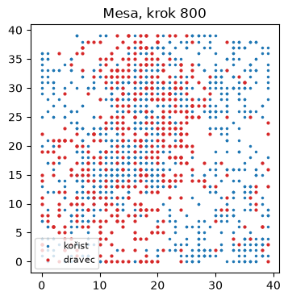
13.6. Náhodná procházka a difuze#
V posledním příkladu ukážeme souvislost mezi pohybem jednotlivých agentů a difuzní rovnicí. Uvažujme agenty pohybující se po přímce. Na začátku jsou všichni v bodě \(x=0\). V každém časovém kroku se každý agent nezávisle na ostatních posune o jednotku doprava nebo doleva, obě možnosti mají pravděpodobnost \(1/2\). Takový pohyb se nazývá náhodná procházka.
Po \(t\) krocích je poloha agenta součtem \(t\) nezávislých náhodných kroků. Podle centrální limitní věty má poloha přibližně normální rozdělení se střední hodnotou \(0\) a rozptylem \(t\). Hustota agentů je tedy přibližně
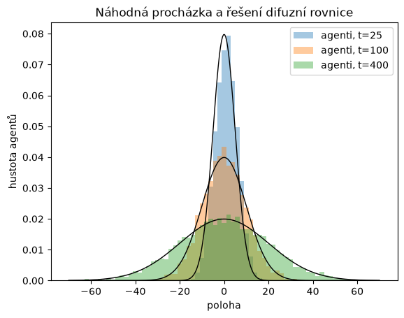
13.6.1. Stejný model v knihovně Mesa#
Agent Chodec má jedinou vlastnost, polohu x, a v každém kroku ji změní o
\(\pm1\). Polohy všech agentů ve všech časech zaznamená DataCollector
pomocí parametru agent_reporters. Výsledkem je tabulka, jejíž řádky jsou
indexovány dvojicí (krok, číslo agenta). Polohy v daném kroku z ní vybereme
metodou xs.
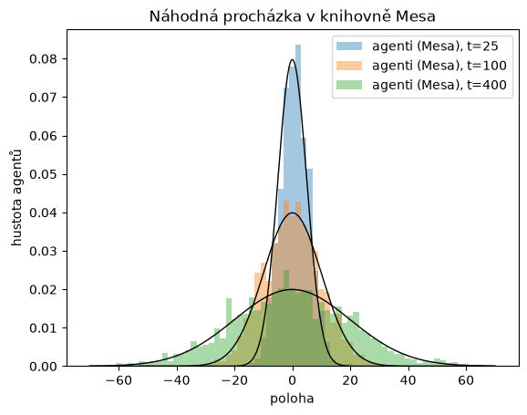
13.7. Shrnutí#
Agentní modely popisují populaci zdola, prostřednictvím pravidel pro jedince.
Pro velké a dobře promíchané populace se jejich průměrné chování shoduje s modely založenými na diferenciálních rovnicích (exponenciální a logistický růst, difuze).
Umožňují zachytit náhodné jevy, jako je vymření malé populace nebo kolísání kolem nosné kapacity, které deterministické modely nepostihnou.
Umožňují snadno zahrnout prostor, individuální rozdíly mezi jedinci a lokální interakce. Jak jsme viděli u modelu dravce a kořisti, prostorová struktura může zásadně změnit chování celého společenstva.
Výsledky je nutné zpracovávat statisticky z mnoha opakování simulace a modely je obtížné analyzovat matematickými prostředky.
Srovnání obou způsobů programování ukazuje typický kompromis. Verze v NumPy je rychlejší, ale pravidla pro jedince jsou v ní skryta v operacích s poli. Verze v knihovně Mesa je pomalejší, ale její kód přímo odpovídá slovnímu popisu modelu: každé pravidlo je jedna metoda agenta. Model se proto snadno čte, kontroluje i rozšiřuje. Další druh, další vlastnost jedince nebo nové pravidlo znamená přidat třídu, atribut nebo metodu. U modelu logistického růstu jsme například využili celý model rození a umírání a změnili jen výpočet úmrtnosti. Pro rychlé statistické experimenty s jednoduchými pravidly je vhodnější NumPy, pro modely s mnoha druhy a složitým chováním jedinců knihovna Mesa.
Protože agentní modely mohou obsahovat mnoho pravidel a parametrů, je důležité je pečlivě a srozumitelně popsat, aby je bylo možné zopakovat a zkontrolovat. K tomu se v ekologii používá standardizovaný popis zvaný protokol ODD (Overview, Design concepts, Details), viz [17].